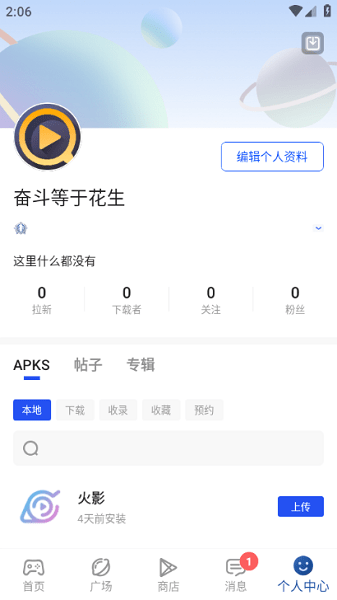

为了找一个能用的旧版 APP，我翻遍了三个商店最后还是它救了我
一个折腾党深夜找包的真实经历：从应用商店下架到搜索引擎踩坑，最后在 APKHUB 里五分钟搞定。聊聊那个让我绕了一大圈才找到的社区。
那是周三凌晨一点四十七分，我躺在床上盯着天花板，手机屏幕的蓝光把天花板染成了诡异的紫色。事情要从四个小时前说起。
导师让我们用一个叫「数据可视化神器」的 APP 做课程作业——名字我就不提了，免得有人说打广告。重点是，这个 APP 一年前就从谷歌商店撤了，据说是开发者去搞 VR 项目了，留下一个半残的官网和一堆不知真假的第三方镜像。
我先去谷歌商店搜了一遍，不出所料，搜不到。然后去浏览器里直接搜 APP 名字，出来的前十条全是那种弹窗广告满天飞的下载站，点进去先给你弹三个「一键加速清理」的假安装包，手机管家狂跳警报。折腾了一个小时，下载了三个不同的 APK，一个解析失败，一个装完闪退，还有一个打开就让我填手机号领红包——我直接卸了。
室友被我翻东西的声音吵醒，迷迷糊糊地丢给我一句：「你试试 APKHUB？我上次找一个老版浏览器就是在那找到的。」
我其实不太信这种「朋友推荐」的应用商店——被坑过太多次了。但实在没别的办法，就打开 Play 商店搜了 APKHUB。巧的是，apkhub官网居然还在。
装 APP 的过程本身就挺顺的
下载速度挺快，APK 大概十几兆，几分钟就装完了。打开之后是个挺干净的界面，底部四个标签：首页、分类、广场、消息。首页顶部有个搜索框，我直接输了那个 APP 的名字——
然后我发现一个小技巧：输入到第三个字的时候，搜索框下面自动蹦出来一排联想词，其中就有我要的那个 APP 的完整名字，后面还带了「最新版」「老版本」两个小标签。我选了「老版本」那个，直接跳出来三个结果。

进去一看，详情页比我之前在那些垃圾下载站看到的正经多了：有真实的应用截图、版本号、更新日期，下面还有评论区。有人在评论区说这个版本在 Android 12 上也能跑，我放心了，点了下载。
但真正让我觉得「这地方不一样」的，是后面
安装包下载完，系统跳出来一个「未知来源安装」的提示——这个我熟，之前装别的东西也遇到过。但这次 APKHUB 在弹窗下面直接多了一行小字：「这是正常提示，你可以在设置里临时允许本次安装。」后面跟着一个直接跳转到设置页面的按钮。
我点了授权，装完点开 APP，跑起来正常。那一刻我躺在床上松了口气，总算能睡了。
但睡觉前我又忍不住想回头看看 APKHUB 这个东西。因为整个过程太顺了——没有弹广告，没有让我填任何个人信息，没有推荐什么奇怪的东西。我之前用过的那些第三方应用商店，哪一个不是打开就给你推十个什么清理大师、电池管家之类的？
我翻到底部那个「广场」标签，发现这地方有帖子。有人在发某个游戏的通关攻略，有人在讨论某款手机怎么 root 最稳，还有人发帖说自己发现了一个「应用商店没上架但真的好用的笔记 APP」。我随手点进去看了两篇，帖子下面的评论区有人追问细节，楼主也真的回复了——不是那种「加微信私聊」的套路，是实实在在说清楚怎么弄。

第二天白天我又回去逛了一遍
这次不是急着找东西，是带着好奇心看的。首页的分类挺细的：工具、游戏、社交、学习、影音……每个分类下面还有子分类。搜索除了联想词，还能按评分、下载量排序。
我想起来昨天找那个 APP 时，搜索结果里有个「搜不到怎么办」的引导页，顺手翻了一下apkhub文档，里面说如果站内没有，还可以走另一条路径获取。还有个「预约下载」的功能——大文件先标记下来，等 WiFi 环境自动下载，这个设计挺贴心的。
让我印象最深的还是那个消息中心。底部「消息」图标有红点角标，我点进去看了一眼——其实都是社区互动的通知，比如有人给我昨天随手发的一条评论点了赞，还有系统提示说我关注的某个楼主发新帖了。这里有个小细节值得提一下：官方不会通过私信要你的账号密码或者付款，这一点消息中心里有明确提醒，防着冒充官方的诈骗。
写这篇东西的时候我又想了想
其实类似的第三方应用商店我不是第一次用了。之前帮我爸找过一个国内应用商店下架的炒股软件，翻了四五个下载站才敢点一个，结果装完手机管家提示有风险，又卸了。
APKHUB 给我的感觉不太一样。从界面到下载流程到社区氛围，有一种「认真做事」的松弛感——它没在首页弹一堆广告，没让你注册才能下东西，没给你推荐任何清理大师类的捆绑包。社区里的帖子也不是那种水帖，是真的有人在分享使用经验和解决问题的过程。
当然它也有缺点——有些冷门 APP 可能搜不到，毕竟它不是万能的。但就我这一次的经历来说，我是真的在搜索引擎、谷歌商店、三个垃圾下载站都兜了一圈之后，在这里五分钟就搞定了。
可能这就是「好用的东西其实挺朴素」的道理吧。找一个能用的旧版 APP，本来不应该花掉我凌晨的两个小时。顺便提一句，APKHUB 的完整资料在GitHub、Gitee 和 GitCode 三个仓库都有收录，内容是同步更新的，国内访问的话 Gitee 和 GitCode 体验会好一些。